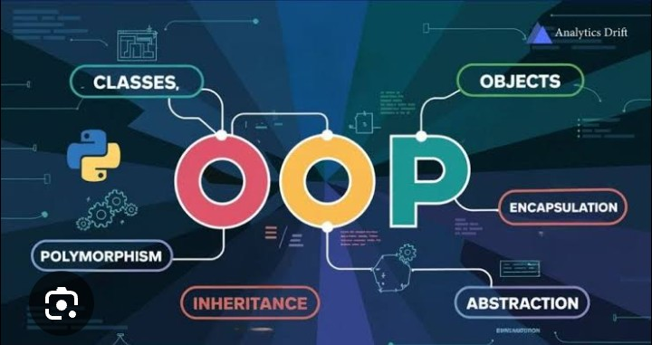
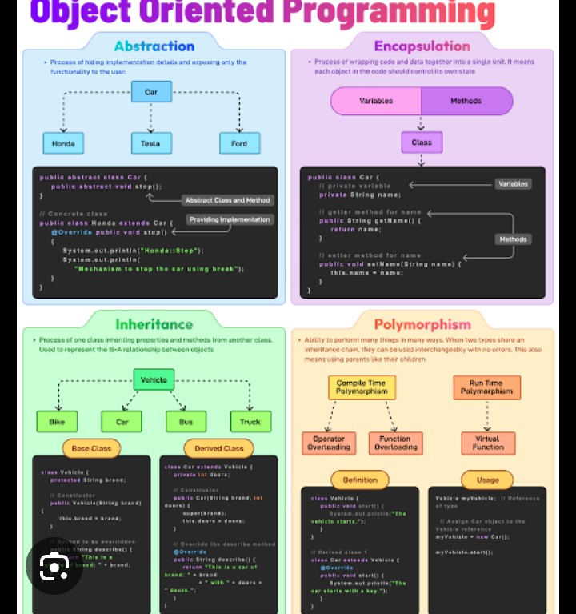
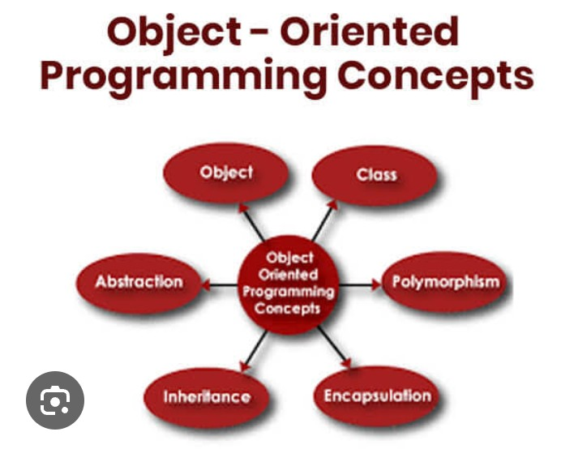
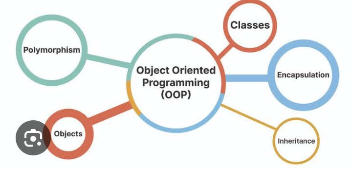

Object-Oriented Programming, commonly known as OOP, is one of the most powerful programming paradigms used in modern software development. Instead of writing programs as a collection of separate functions, OOP organizes code into objects and classes. This approach makes programs easier to understand, maintain, reuse, and expand. Almost every large software application, including games, banking systems, e-commerce websites, and social media platforms, uses Object-Oriented Programming.

Object-Oriented Programming is a programming style where data and the functions that work with that data are combined into a single unit called an object. Every object belongs to a class, which acts as a blueprint for creating similar objects.
Instead of focusing only on functions, OOP focuses on objects that represent real-world things. For example, a student, a car, a mobile phone, or a bank account can all be represented as objects in a Python program.
As software becomes larger, managing thousands of lines of code becomes difficult. OOP solves this problem by organizing code into reusable classes and objects. This improves readability, reduces duplication, and makes applications easier to maintain.

Procedural programming focuses mainly on functions and instructions, while Object-Oriented Programming focuses on objects that contain both data and behavior.
| Procedural Programming | Object-Oriented Programming |
|---|---|
| Function Based | Object Based |
| Less Reusable | Highly Reusable |
| Difficult for Large Projects | Ideal for Large Projects |
| Less Secure | Better Data Protection |
A class is a blueprint or template used to create objects. It defines what information an object will store and what actions it can perform.
Think of a class as a building plan. The plan itself is not a building, but many buildings can be constructed using the same blueprint.
class Student:
pass
The pass keyword tells Python that the class is currently empty.

An object is an actual instance of a class. Once a class is created, multiple objects can be created from it. Every object has its own data while sharing the same structure defined by the class.
class Student:
pass
student1 = Student()
student2 = Student()
Here, student1 and student2 are two different objects created from the same class.
Imagine a car showroom. The company designs one blueprint for a specific car model. Thousands of cars are then manufactured using that blueprint. The blueprint represents the class, while each individual car is an object.
The constructor is a special method that automatically runs whenever a new object is created. In Python, the constructor is written using __init__().
class Student:
def __init__(self):
print("Object Created")
Creating an object:
student = Student()
Output:
Object Created
Attributes are variables that belong to an object. They store information such as name, age, marks, or any other data related to the object.
class Student:
def __init__(self, name, age):
self.name = name
self.age = age
student = Student("Ali",18)
print(student.name)
print(student.age)
Output:
Ali 18
Methods are functions that belong to a class. They describe what an object can do.
class Student:
def __init__(self,name):
self.name = name
def introduce(self):
print("My name is", self.name)
student = Student("Ahmed")
student.introduce()
Output:
My name is Ahmed

self KeywordOne of the first things beginners notice in Python classes is the self keyword. The self parameter represents the current object of the class. It allows each object to access its own attributes and methods. Every instance of a class has its own data, and self ensures that Python knows which object's data is being used.
class Student:
def __init__(self, name):
self.name = name
def show(self):
print(self.name)
student = Student("Ali")
student.show()
Output:
Ali
Encapsulation is one of the four main principles of Object-Oriented Programming. It means keeping data and the methods that work on that data together inside a class while protecting important information from being accessed directly. This improves security and prevents accidental changes.
class BankAccount:
def __init__(self, balance):
self.__balance = balance
def show_balance(self):
print(self.__balance)
account = BankAccount(5000)
account.show_balance()
In this example, __balance is treated as a private attribute, making it harder to access directly from outside the class.
Inheritance allows one class to use the properties and methods of another class. This promotes code reuse and reduces duplication. The original class is called the Parent Class, while the new class is called the Child Class.
class Animal:
def speak(self):
print("Animal makes a sound")
class Dog(Animal):
pass
dog = Dog()
dog.speak()
Output:
Animal makes a sound
Sometimes a child class needs to provide its own version of a method already defined in the parent class. This is known as method overriding.
class Animal:
def speak(self):
print("Animal Sound")
class Cat(Animal):
def speak(self):
print("Meow")
cat = Cat()
cat.speak()
Output:
Meow
The super() function allows a child class to call methods or constructors from its parent class. It is commonly used when the child class wants to extend the parent's functionality instead of replacing it completely.
class Person:
def __init__(self, name):
self.name = name
class Student(Person):
def __init__(self, name, grade):
super().__init__(name)
self.grade = grade
student = Student("Ahmed", "A")
print(student.name)
print(student.grade)
Output:
Ahmed A
Polymorphism means "many forms." It allows different classes to use methods with the same name while performing different tasks. This makes programs more flexible and easier to extend.
class Bird:
def sound(self):
print("Chirp")
class Dog:
def sound(self):
print("Bark")
animals = [Bird(), Dog()]
for animal in animals:
animal.sound()
Output:
Chirp Bark

Imagine a school management system. A Person class stores common information such as name and age. A Student class inherits from Person and adds marks, while a Teacher class inherits from the same parent and adds salary and subject. This avoids writing the same code repeatedly and keeps the project organized.
Abstraction is one of the four main principles of Object-Oriented Programming. It means hiding unnecessary implementation details and showing only the essential features to the user. This makes programs easier to understand and use because users only interact with what is necessary.
from abc import ABC, abstractmethod
class Vehicle(ABC):
@abstractmethod
def start(self):
pass
class Car(Vehicle):
def start(self):
print("Car Started")
car = Car()
car.start()
Output:
Car Started
Every Object-Oriented Programming language is built around four important principles:
The following program creates a simple bank account using Object-Oriented Programming.
class BankAccount:
def __init__(self, owner, balance):
self.owner = owner
self.balance = balance
def deposit(self, amount):
self.balance += amount
def withdraw(self, amount):
self.balance -= amount
def show_balance(self):
print("Balance:", self.balance)
account = BankAccount("Ali", 10000)
account.deposit(2000)
account.withdraw(1500)
account.show_balance()
Output:
Balance: 10500
Object-Oriented Programming is widely used in professional software development. Banking systems use classes for customers and accounts, hospitals use classes for doctors and patients, schools use classes for students and teachers, and e-commerce websites use classes for products, customers, and orders. Popular frameworks such as Django and many game development engines also rely heavily on OOP concepts.
Object-Oriented Programming is one of the most valuable programming concepts every Python developer should master. It helps organize code into reusable classes and objects, making applications easier to develop, maintain, and expand. By understanding classes, objects, constructors, inheritance, encapsulation, polymorphism, and abstraction, beginners can build a strong foundation for creating professional software. Whether you plan to become a web developer, software engineer, or AI developer, learning OOP will greatly improve your programming skills and prepare you for real-world projects.
Congratulations! You have completed the fundamentals of Object-Oriented Programming in Python. Continue practicing by building projects such as a Student Management System, Library Management System, Banking Application, or Inventory Management System. The more you practice OOP, the more confident you will become in designing professional and scalable software applications.